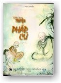

|
BuddhaSasana
Home Page |
Vietnamese,
with Unicode Times font |
|  |
Tích
truyện Pháp Cú
Thiền
viện Viên Chiếu
Nguyên
tác: "Buddhist Legends",
Eugène Watson Burlingame
|
|
Mục Lục |
| |
Lời nói đầu
Dẫn nhập |
|
Phẩm
I: Song Yếu |
1. Nếu con mắt ngươi
làm hại ngươi, hãy móc bỏ nó đi
2. Khóc đòi những chuyện trên trời
3. Chàng mập Tissa
4. Không lấy oán trả oán
5. Những vị Tỳ-kheo hay cãi cọ xứ Câu-thâm (Kosambi)
6. Kala anh và Kala em
7. Ðề-bà-đạt-đa đắp y không tương xứng.
8. Những đại đệ tử
9. Trưởng lão Nan-đà
10. Cunda - đồ tể mổ heo
11. Cư sĩ hiền thiện
12. Nghiệp của Ðề-bà-đạt-đa
13. Bà Sumanà
14. Chuyện hai huynh đệ |
|
Phẩm
II:
Không Phóng Dật |
1. Những chuyện luân
hồi quanh vua Udena
2. Tiếng nói của một người giàu
3. Châu-lợi-bàn-đặc
4. Ngày lễ của kẻ ngu
5. Ðại Ca-diếp
6. Hai huynh đệ
7. Magha trở thành trời Sakka
8. Một Tỳ-kheo chứng A-la-hán
9. Tissa ở phố chợ |
|
Phẩm
III: Tâm |
1. Trưởng lão Meghiya
2. Người đọc được tâm
3. Một Tỳ-kheo bất mãn
4. Tăng hộ cháu
5. Trưởng lão tâm được điều phục
6. Tỳ-kheo và thần cây
7. Vì bạo ác nổi mụn nhọt
8. Nanda chăn bò
9. Vừa là mẹ vừa là cha |
|
Phẩm
IV: Hoa |
1. Ðất của tâm
2. Một Tỳ-kheo chứng A-la-hán
3. Vua Vidùdabha trả thù họ Thích-ca
4. Người tôn vinh chồng
5. Kosiya keo kiệt
6. Ẩn sĩ lõa thể Pàthika
7. Vua và vua các vua.
8. Ðám cưới bà Tỳ-xá-khư
9. Câu hỏi của trưởng lão A-nan
10. Ðế Thích cúng dường Ðại Ca-diếp
11. Godhica chứng Niết-bàn
12. Sirigutta và Garahadinna |
|
Phẩm
V: Ngu |
1. Nhà vua và người
nghèo có vợ đẹp
2. Một tăng sinh khó dạy
3. Kẻ vận rủi trong nhà
4. Kẻ móc túi
5. Trí ngu
6. Từ trụy lạc tới đức hạnh
7. Một người cùi bị thử thách phủ nhận niềm tin
8. Một nông dân bị kết tội oan
9. Sumana - người làm vườn
10. Uppalavannà bị cưỡng bức
11. Ðạo sĩ lõa thể Jambuka
12. Quỷ rắn và quỷ quạ
13. Quỷ búa tạ
14. Citta và Sudhamma
15. Sa-di bảy tuổi được lòng mọi người |
|
Phẩm
VI: Hiền Trí |
1. Một người được
kho báu tinh thần
2. Những Tỳ-kheo ương ngạnh
3. Trưởng lão Xa-nặc
4. Trưởng lão đại Kappina
5. Sa-di Pandita
6. Vững vàng như đá tảng
7. Yên lặng sau cơn bão
8. Một lũ lang thang
9. Chồng và vợ
10. Ít người đến bờ kia
11. Từ bỏ đen tối. |
|
Phẩm
VII: A La Hán |
1. Ðấng Như Lai không
đau khổ
2. Thoát khỏi trói buộc
3. Một Tỳ-kheo trữ thức ăn
4. Tỳ-kheo và nữ thần
5. Ðế Thích lễ kính một Tỳ-kheo
6. Tưởng mình bị khi dễ
7. Mất một mắt
8. Không tin vào ai khác
9. Trưởng lão Revata trong rừng keo
10. Một kỹ nữ cám dỗ một Tỳ-kheo |
|
Phẩm
VIII: Ngàn |
1. Tên đao phủ
2. Sự chuyển hóa của Bàhiya Dàruciriya
3. Cô gái lấy tên cướp
4. Ðược và mất
5. Chú của Xá-lợi-phất
6. Cháu của Xá-lợi-phất
7. Bạn của Xá-lợi-phất
8. Chàng trai tăng tuổi thọ
9. Sa-di Samkicca
10. Tỳ-kheo và kẻ cướp
11. Lưỡi dao cạo
12. Patacara bị mất cả gia đình
13. Kisà Gotami tìm hạt cải trị bệnh cho đứa con đã
chết
14. Góa phụ Bazhuputtikà và những đứa con bất hiếu |
|
Phẩm
IX: Ác |
1. Bà-la-môn tiểu
nhất y
2. Một Tỳ-kheo bất mãn
3. Thiên nữ với Tỳ-kheo
4. Cấp Cô Ðộc và nữ thần
5. Tỳ-kheo không giữ gìn tốt đồ dùng
6. Chưởng khố chân mèo
7. Thương gia đại phú
8. Người thợ săn bắn mê muội
9. Thợ săn bị bầy chó của mình nuốt sống
10. Thợ kim hoàn, Tỳ-kheo và con ngỗng
11. Ba nhóm Tỳ-kheo
12. Suppabuddha lăng nhục đạo sư |
|
Phẩm
X: Hình Phạt |
1. Lục quần Tỳ-kheo
2. Lục quần Tỳ-kheo
3. Một bầy trẻ
4. Tỳ-kheo và con ma
5. Tỳ-xá-khư và quyến thuộc giữ bát quan trai
6. Ngạ quỷ hình trăn
7. Cái chết của Ðại Mục-kiền-liên
8. Tỳ-kheo lắm của
9. Santati, quan đại thần của vua
10. Tỳ-kheo và bộ đồ rách
11. Sa-di Sukha |
|
Phẩm
XI: Già |
1. Bạn của Tỳ-xá-khư
say rượu
2. Ðức Phật chữa trị một Tỳ-kheo lụy tình
3. Bà ni già
4. Nhóm Tỳ-kheo cả tin
5. Ni cô và bóng sắc
6. Hoàng hậu Millikà và con chó
7. Một Tỳ-kheo thường nói không đúng chỗ
8. Kệ của Trưởng lão A-nan
9. Ðại phú, con của chưởng khố. |
|
Phẩm
XII: Tự Ngã |
1. Hoàng tử Bồ-đề và
con chim thần
2. Một Tỳ-kheo tham lam
3. Hãy hành động theo lời nói
4. Ðừng ghét bỏ cha mẹ
5. Mahà Kàla bị giết
6. Ðề-bà-đạt-đa tìm cách giết Phật
7. Ðề-bà-đạt-đa gây chia rẽ trong Tăng đoàn
8. Vị Tỳ-kheo đố kỵ
9. Cô gái giang hồ cứu mạng một cư sĩ
10. Tu tập chân chánh để tôn quý Thế Tôn |
|
Phẩm
XIII: Thế Gian |
1. Một thiếu nữ chế
giễu thầy Tỳ-kheo trẻ
2. Ðức Phật về thăm Ca-tỳ-la-vệ
3. Năm trăm Tỳ-kheo chứng quả
4. Hoàng tử Vô úy (Abhaya) mất hầu thiếp
5. Thầy Tỳ-kheo và cây chổi
6. Câu chuyện của Chỉ Man
7. Cô bé dệt vải
8. Ba mươi vị Tỳ-kheo
9. Chiến Già vu khống Phật
10. Phẩm vật không thể nào so sánh
11. Ðức hạnh được trả giả |
|
Phẩm
XIV: Phật |
1. Ðấng toàn giác
2. Thần thông song hành
3. Long vương và ái nữ
4. Phương cách giáo giới trong ngày bố-tát của bảy đời
đức Phật
5. Phật trị bệnh bất mãn cho thầy Tỳ-kheo
6. Sa-môn và Long vương
7. Người cao quý sinh ra ở đâu?
8. Ðiều gì hạnh phúc nhất trên đời
9. Tôn kính những bậc đáng tôn kính |
|
Phẩm
XV: Hạnh Phúc |
1. Mối tranh chấp
giữa hai lân bang
2. Ma vương chế ngự thôn dân
3. Vua Ba-tư-nặc bại trận
4. Ðừng nhìn say đắm nữ nhân
5. Phận ban thức ăn cho người đói
6. Ăn uống tiết độ
7. Sống chân chánh là tôn kính Phật
8. Ðế Thích săn sóc Thế Tôn |
|
Phẩm
XVI: Hỷ Ái |
1. Cha mẹ và con
2. Phật an ủi người phiền muộn
3. Phật an ủi kẻ ưu sầu
4. Các hoàng tử Lệ-xá và kỹ nữ
5. Cô nương tử kim
6. Ðừng để tâm vào của cải thế gian
7. Ngài Ca-diếp được cúng bánh
8. Tôn giả chứng quả A-na-hàm
9. Nandiya được sanh thiên |
|
Phẩm
XVII: Sân Hận |
1. Sân hận tàn phá
dung nhan
2. Thọ thần và thầy Tỳ-kheo
3. Người nghèo và cô con gái
4. Việc thiện nhỏ đưa đến thiên giới
5. Bà-la-môn đón Phật như con
6. Có phải người tặng quà làm nên quà tặng
7. Không có gì quá nhiều, quá ít
8. Lục quần Tỳ-kheo. |
|
Phẩm
XVIII: Cấu Uế |
1. Người đồ tể và
đứa con trai
2. Dần dà từng chút
3. Con rận tiếc của
4. Thầy Tỳ-kheo kiêu ngạo
5. Tà hạnh của nữ nhân
6. Lịch sự và thô lỗ
7. Tất cả giới cấm đều khó giữ
8. Kẻ bới lỗi người khác
9. Những người lơ đễnh
10. Trưởng giả Ram
11. Tỳ-kheo bới lỗi
12. Hư không có dấu chân? |
|
Phẩm
XIX:
Công Bình Pháp Trụ |
1. Quan tòa bất công
2. Lục quần Tỳ-kheo
3. Không phải vì nói nhiều mà được ca tụng
4. Người trẻ có thể là trưởng lão?
5. Thế nào là người hoàn toàn?
6. Ðầu trọc không làm nên Tỳ-kheo
7. Ðiều gì làm nên Sa-môn
8. Không phải im lặng làm nên bậc thánh
9. Cao quí là hành động cao quí
10. Ðừng tự mãn |
|
Phẩm
XX: Ðạo |
1. Bát chánh đạo là
đường tối thượng
2. Vô thường
3. Khổ
4. Vô ngã
5. Chớ hẹn ngày mai
6. Con quỉ đầu heo
7. Pothila, ông sư rỗng
8. Các lão Tỳ-kheo và lão bà
9. Cỏ úa, hoa phai
10. Chắc chắn sẽ chết
11. Người mẹ mất con và những hạt cải
12. Người đàn bà mất hết thân quyến |
|
Phẩm
XXI: Tạp Lục |
1. Sông Hằng dâng nước
2. Không lấy oán báo oán
3. Các Tỳ-kheo phù hoa
4. Sa-môn giết cha mẹ
5. Cậu bé và quỉ dữ
6. Hoàng tử Bạt-kỳ làm sa-môn
7. Cư sĩ Tâm - người thành tín
8. Cô gái đức hạnh
9. Vị sa-môn độc cư |
|
Phẩm
XXII:
Ðịa Ngục |
1. Cái chết của Tôn-đà-ly
2. Con quỷ xương khô
3. Xảo thuật tìm thức ăn
4. Kẻ đào hoa
5. Thầy sa-môn tự phụ
6. Người vợ ghen tuông
7. Tự canh phòng như giữ thành
8. Các đạo sĩ lõa thể
9. Trẻ con quy y Phật |
|
Phẩm
XXIII: Voi |
1. Phật bị lăng nhục
2. Thầy sa-môn luyện voi
3. Lão Bà-la-môn và các con
4. Ăn uống điều độ
5. Chú tiểu và dạ xoa
6. Con voi sa lầy
7. Voi làm thị giả Phật
8. Ma vương cám dỗ Phật. |
|
Phẩm
XXIV:
Tham Ái |
1. Con cá vàng
2. Con heo nái tơ
3. Thầy Tỳ-kheo bỏ đạo
4. Ngôi nhà tù
5. Sắc đẹp phù du
6. Chàng trai có cô vợ diễn viên nhào lộn
7. Xạ thủ trẻ tài ba
8. Ma vương chẳng nhát được La-hầu-la
9. Nhà tu khổ hạnh hoài nghi
10. Pháp thí thắng mọi thí
11. Quan chưởng khố không con
12. Bố thí nhiều và bố thí ít |
|
Phẩm
XXV: Tỳ Kheo |
1. Giữ gìn ngũ căn
2. Thầy Tỳ-kheo giết ngỗng
3. Thầy Tỳ-kheo không giữ gìn mồm miệng
4. Bằng sự tinh tấn làm vinh dự cho Phật
5. Thầy Tỳ-kheo lạc bầy
6. Người Bà-la-môn cúng dường năm lần thành quả đầu tiên
7. Ðảng cướp đi tu
8. Cỏ úa, hoa phai
9. Vị sa-môn nhàn tịnh
10. Vị sa-môn và chiếc khố rách
11. Người thầy chánh pháp là thầy ta
12. Vị sa-môn và long vương |
|
Phẩm
XXVI:
Bà La Môn |
1. Bà-la-môn đại hỉ
2. Thế nào là "hai trạng thái"?
3. Thế nào là bờ kia?
4. Thế nào là Bà-la-môn?
5. Ðức Phật sáng ngời
6. Thế nào là Tỳ-kheo?
7. Ðức nhẫn nại chinh phục sự tàn ác
8. Ngài di mẫu thọ giới
9. Tôn kính người đáng tôn kính
10. Thế nào là Bà-la-môn?
11. Người Bà-la-môn gian xảo
12. Bà Kisa Gotami, vị Tỳ-kheo ni tu hạnh đầu đà
13. Thế nào là Bà-la-môn?
14. Diễn viên xiếc Uggasena
15. Tranh cãi về sức kéo
16. Ðức Thế Tôn chế ngự kẻ sân giận
17. Tôn giả Xá-lợi-phất bị mẹ mắng
18. A-la-hán có phàm thân hay không?
19. Người nô lệ trút gánh nặng
20. Khemà trí tuệ
21. Vị sa-môn và thiên thần
22. Vị sa-môn và người đàn bà
23. Bốn vị sa-di
24. Tôn giả Ðại-bàn-đặc có còn sân giận không?
25. Sức mạnh tập khí
26. Thầy Tỳ-kheo bị kết tội trộm cắp
27. Tôn giả Xá-lợi-phất bị hiểu lầm
28. Tôn giả Mục-kiền-liên bị hiểu lầm
29. Bỏ cả tốt lẫn xấu
30. Tôn giả Nguyệt Quang
31. Bảy năm trong bụng mẹ
32. Cô gái giang hồ quyến rũ thầy Tỳ-kheo Sundarasamudda
33. Jotika và Jatila
34. Vua A-xà-thế đánh chiếm lâu đài Jotika
35. Người diễn kịch câm xuất gia làm sa-môn
36. Người diễn kịch câm xuất gia làm sa-môn
37. Người gõ đầu lâu
38. Ông bà Visàkha
39. Angulimàla, Vô não
40. Phạm hạnh của thí chủ quyết định phước báo của cúng
dường |
| |
Phần kết |
-ooOoo-
Lời Nói
Ðầu
Tập "Tích Truyện Pháp Cú"
này được dịch theo bản Anh ngữ "Buddhist Legends" của
học giả Eugène Watson Burlingame. Nhà học giả này đã căn cứ trên
nguyên tác Pháp Cú Sớ Giải (Dhammapada Commentary) bằng tiếng
Pàli. Tương truyền Pháp Cú Sớ Giải là công trình của ngài
Buddhaghosa (Phật Âm), sống khoảng thế kỷ thứ V Tây lịch.
Nhận thấy sự lợi ích
rộng lớn của nó, chúng tôi phụng dịch để đóng góp vào nền
Phật học nước nhà. Tuy cố gắng hết sức, nhưng không sao tránh
khỏi những thiếu sót, kính mong chư vị Cao Túc thương tình tha
thứ cho.
Chúng con cũng xin tri ân Thành
hội Phật giáo Thành phố Hồ Chí Minh đã giúp đỡ cho việc in
ấn dịch phẩm.
Kính ghi,
Thiền viện Viên Chiếu
Cuối năm Ất Hợi, 1995.
-ooOoo-
Dẫn
Nhập
Kính lạy đức Thế Tôn
Phật Ðà, đấng Toàn Thiện Toàn Giác.
Con xin cúi đầu đảnh lễ Phật, đảnh lễ Pháp, đảnh
lễ Tăng.
Cả thế gian chìm trong đêm
tối dày đặc của vô minh phiền não. Ngài cũng ở thế gian mà quét
sạch được nó. Với năng lực siêu phàm chứng đạt được, Ngài
đã thắp sáng ngọn đèn Chánh pháp.
Ngài là bậc Toàn Trí, phân
biệt rành mạch chơn ngụy trong mọi vấn đề. Ðấng Ðạo sư đã
thuyết nói chánh pháp, vì lòng từ vô lượng đã giảng giải giáo
pháp theo căn cứ, khiến trời người đều được an vui, mãn
nguyện.
"Một bản chú giải
thật sinh động được lưu truyền qua bao thế hệ trên đảo Tích
Lan. Nhưng vì tác phẩm viết bằng thổ ngữ địa phương nên sự
lợi lạc chẳng đến được các xứ xa xôi. Không chừng tác
phẩm sẽ góp phần đắc lực trong việc mang lại an lạc cho hết
thảy nhân loại".
Ðấy là ước nguyện của Trưởng
lão Kumàra Kassapa đã thổ lộ với tôi, vị Trưởng lão đã
khéo tự điều phục được mình, hằng sống với tâm an tịnh, chí
nguyện luôn kiên trì. Ngài chân tình khuyến thỉnh tôi, do lòng
mong muốn Chánh pháp được trường tồn.
Vì vậy, tôi sẽ thay thế
thổ ngữ đầy những lối diễn đạt dài dòng này, phiên dịch tác
phẩm qua thứ tiếng thông dụng, êm ái, dễ nghe của kinh điển.
Những điểm nào khó hiểu, chưa rõ nghĩa trong các câu kệ, dù
chữ hay lời, tôi xin sẽ làm sáng tỏ. Phần còn lại, tôi sẽ trình
bày bằng tiếng Pàli, phù hợp với tinh thần các câu kệ.
Như thế, tôi mong sẽ đem đến an vui, mãn nguyện cho tâm bậc
hiền trí về cả hai mặt đạo và đời.
Tác giả bản Pàli.
--ooOoo--
Ðầu
trang | Mục lục | 01a
| 01b | 01c | 01d
| 02a | 02b | 03
| 04a | 04b | 05a
| 05b | 06 | 07
| 08 | 09 |
10 | 11 | 12 | 13
| 14 | 15 | 16
| 17 | 18 | 19
| 20 | 21 | 22
| 23 | 24 | 25
| 26a | 26b | 26c
[Các
bản kinh Pháp Cú khác]
Chân thành cám ơn anh HDC
đã giúp tổ chức đánh máy vi tính (Bình Anson, 03-2002)
[Trở
về trang Thư Mục]
updated: 15-03-2002